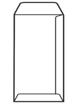
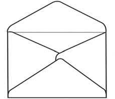

Hard paper such as manila, lightweight board, clips or pins, and a table;
Paper glue, light and heavy glue, and a brush;
Clean water, watercolours, and large boxes; and
Samples of envelopes, boxes, and bags of different sizes and shapes.
Making envelopes and bags
Envelopes and bags can be made using scraps of various types of paper materials. These envelopes and bags can be in different shapes depending on their intended use. Figures 1 and 2 show examples of the different shapes of envelopes and bags.


Figure 1: Envelopes of different shapes
Figure 2: Bags of different shapes
Steps for making envelopes
Take various samples of envelopes and bags of different sizes;
Examine the parts joined with glue. Soften those parts with water;
After three to ten minutes, peel them apart. You will notice they come apart easily;
Add water where it seems difficult to peel. Never use force;
Unfold and stretch the bags or envelopes properly;
Spread them out and let them dry for a while.
3.Hard paper such as manila, lightweight board, clips or pins, and a table;4.Paper glue, light and heavy glue, and a brush;5.Clean water, watercolours, and large boxes; and6.Samples of envelopes, boxes, and bags of different sizes and shapes.Making envelopes and bagsEnvelopes and bags can be made using scraps of various types of paper materials.These envelopes and bags can be in different shapes depending on their intended use.Figures 1 and 2 presents examples of the different shapes of envelopes and bags.A wide envelope with a pointed top flap and crossed folds on the front.A tall, narrow envelope with top and bottom flaps.A wide envelope with a rounded pointed flap and crossed folds on the front.Figure 1: Envelopes of different shapesA paper bag with folded sides and two cutout handles at the top.A tall paper gift bag with string handles and a flap folded over the top.A long, slim paper bag with folded sides and an open top.Figure 2: Bags of different shapesSteps for making envelopes1.Take various samples of envelopes and bags of different sizes;2.Examine the parts joined with glue.Soften those parts with water;3.After three to ten minutes, peel them apart.You will notice they come apart easily;4.Add water where it seems difficult to peel.Never use force;5.Unfold and stretch the bags or envelopes properly;6.Spread them out and let them dry for a while.